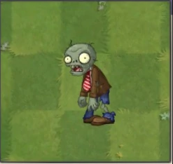
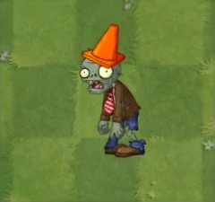
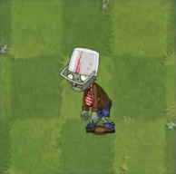
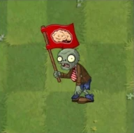
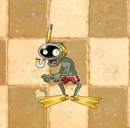
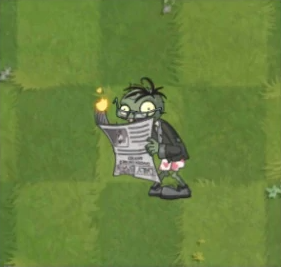
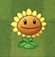
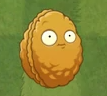
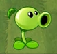

Basic Zombie
Basic Zombie hates the term "Basic". He doesn't consider himself some generic foe or common corpse. He's an individual, darn it, and he's going to make a difference even if it kills you.
Conehead Zombie
His traffic cone headpiece makes him twice as tough as normal zombies. After a wild night, Conehead Zombie woke up holding a mysterious receipt for a cone and industrial strength adhesive.
Buckethead Zombie
His bucket hat makes him extremely resistant to damage. There was a time when Buckethead Zombie was hailed as a zombie genius for his innovative bucket-on-head strategy. It's been a few years, though, and zombies wonder if he's got any surprises left. His secret? He doesn't.
Flag Zombie
His flag marks the arrival of a huge pile or "wave" of zombies. A spelling impaired zombie named "Brian," Flag Zombie keeps thinking the rest of the zombies are talking to him. At least he feels important.
Snorkel Zombie
Snorkel zombies can swim underwater. Special: submerges to avoid attacks. Snorkel Zombie has a hard time getting the Bikini Zombies. He's tried offering them flowers, jewelry, and even chocolate-covered brains. But nothing seems to work. They just can't seem to see past the snorkel on his face.
Newspaper Zombie
Newspaper protects zombie, who is then enraged when it is destroyed. Special: becomes a flighty zombie once the newspaper is destroyed You can't really blame him for getting so upset; he was THIS close to finishing the crossword (23 down was "Brains").
Sunflower
Sunflowers are essential for you to produce extra sun. Try planting as many as you can! Sun Production: normal. After the release of her first major Youtuber video "Zombies On Your Lawn," Sunflower's Youtuber channel has been bursting with fun. She is currently putting the final touches on her reality show TV pitch "Sunflower Thinks She Can Dance."
Wall-nut
Wall-nuts have hard shells which you can use to protect your other plants. Having retired from his days as a champion bowler in the Pro Leagues, Wall-nut is looking forward to a real challenge on the front lines of home defense. DEFENSE! DEFENSE!
Peashooter
Peashooters are your first line of defense. They shoot peas at attacking zombies. "What is it like being famous?" asked the Peashooter while sipping his bottled water, "I can't talk right now, I'm finishing my merchandising deal. Hold my fir coat."